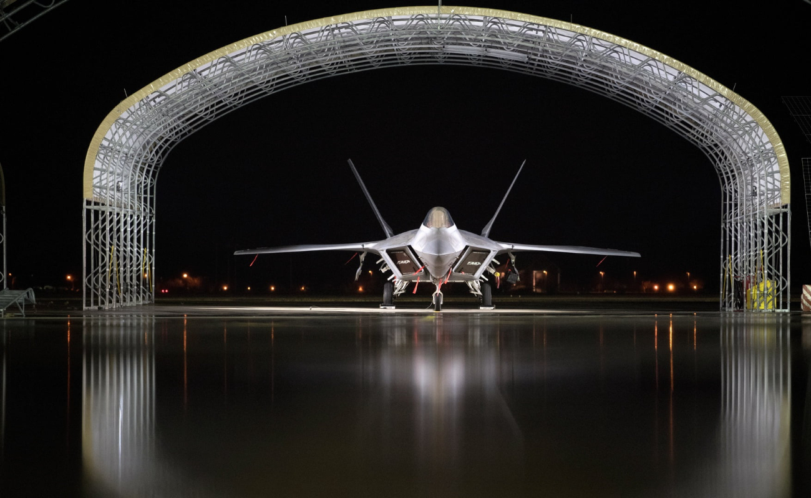
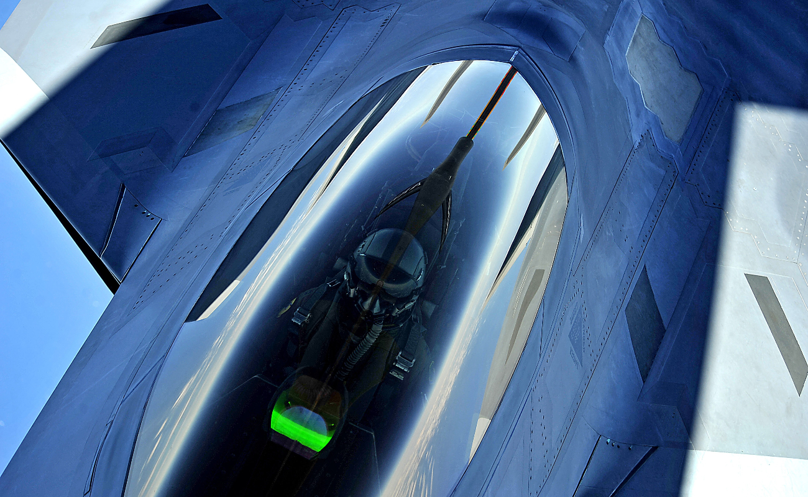
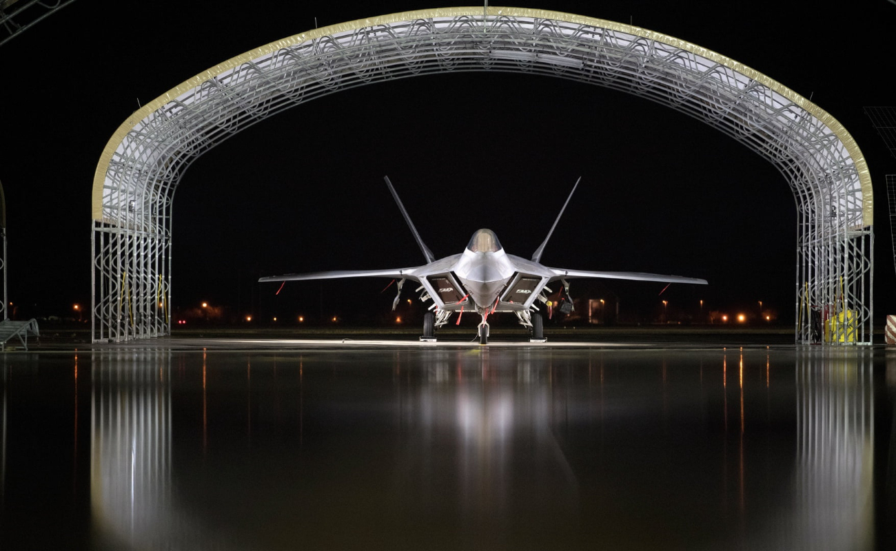
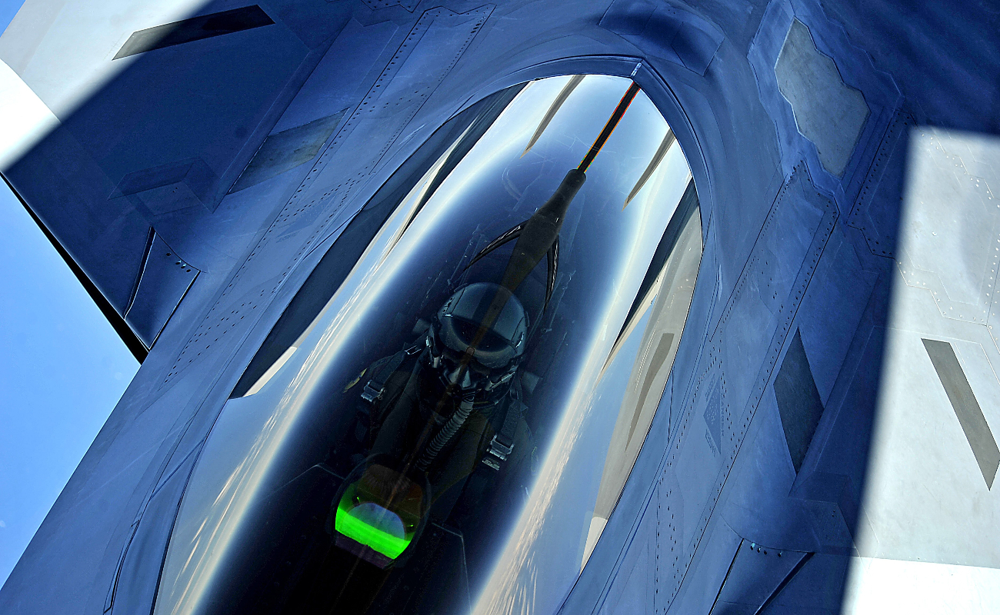

Breaking The Sound Barrier
F-22 Raptor | Digital, Dominant, Ready
Aeronautics Homefront
Origins
In 1981, the U.S. Air Force identified a requirement for an Advanced Tactical Fighter (ATF) to replace the F-15 Eagle and F-16 Fighting Falcon. Code-named "Senior Sky", this air-superiority fighter program was influenced by emerging worldwide threats, including new developments in Soviet air defense systems and the proliferation of the Sukhoi Su-27 "Flanker"- and Mikoyan MiG-29 "Fulcrum"-class of fighter aircraft. It would take advantage of the new technologies in fighter design on the horizon, including composite materials, lightweight alloys, advanced flight control systems and avionics, more powerful propulsion systems, and most importantly, stealth technology. In 1983, the ATF concept development team became the System Program Office (SPO) and managed the program at Wright-Patterson Air Force Base. The demonstration and validation (Dem/Val) request for proposals (RFP) was issued in September 1985, with requirements placing a strong emphasis on stealth and supercruise.
Cockpit
The F-22 has a glass cockpit with all-digital flight instruments. The monochrome head-up display offers a wide field of view and serves as a primary flight instrument; information is also displayed upon six color liquid-crystal display (LCD) panels. The primary flight controls are a force-sensitive side-stick controller and a pair of throttles. The USAF initially wanted to implement direct voice input (DVI) controls, but this was judged to be too technically risky and was abandoned. The canopy's dimensions are approximately 140 inches long, 45 inches wide, and 27 inches tall (355 cm * 115 cm * 69 cm) and weighs 360 pounds. The canopy was redesigned after the original design lasted an average of 331 hours instead of the required 800 hours.
Stealth
The F-22 was designed to be highly difficult to detect and track by radar. Measures to reduce RCS include airframe shaping such as alignment of edges, internal carriage of weapons, fixed-geometry serpentine inlets and curved vanes that prevent line-of-sight of the engine faces and turbines from any exterior view, use of radar-absorbent material (RAM), and attention to detail such as hinges and pilot helmets that could provide a radar return. The F-22 was also designed to have decreased radio emissions, infrared signature and acoustic signature as well as reduced visibility to the naked eye. The aircraft's flat thrust-vectoring nozzles reduce infrared emissions of the exhaust plume to mitigate the threat of infrared homing ("heat seeking") surface-to-air or air-to-air missiles.[148] Additional measures to reduce the infrared signature include special topcoat and active cooling of leading edges to manage the heat buildup from supersonic flight.
Image Gallery
 


